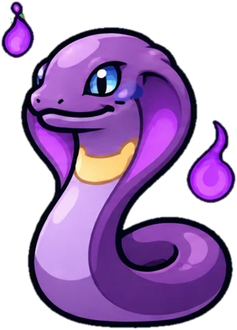

 Electric
ElectricTap a stage to read its story.
Voxil is a cheerful purple cobra that rears up with a bright grin, its broad hood barely the size of a hand yet flared with evident pride. Its smooth scales carry a slight electric sheen, and it taps its tail against marsh-reeds to produce a faint crackling rhythm that other snakes in the Poison Marsh can read from meters away. It is bold for its size - it approaches strangers first and lets them leave only after it has checked their pockets.
Field note: Voxil can send a short message through any network of connected marsh-reeds in under four seconds - scholars at the university call it the world's smallest telegraph.
Poison Marsh. Voxil and its family are found in the Poison Marsh. See everyone who lives there.
Share a Bond Food that matches its types to become friends. Voxil loves:
A Bond Food is not a trick. It joins your spirit with the Kimuro's spirit, and only when it chooses you.
Print the Kimuro adventure packs: mazes, cards, a board game and Bond Mark medals.
See the printable packs